Chapitre 4 TRAVAUX D’ETUDIANTS 2021
## Global options
library(knitr)
library(dplyr)
library(ggplot2)
library(sf)
opts_chunk$set(echo=FALSE,
cache=TRUE,
prompt=FALSE,
tidy=FALSE,
comment=NA,
message=FALSE,
warning=FALSE)- Rappel des consignes
Vous devez identifier une API intéressante, accessible soit par un package R, soit par une combinaison de comandes GET() puis montrer son utilisation à l’aide d’un exemple de création d’un tableau puis d’un graphique.
Vous présenterez le résultat sous la forme d’un document markdown d’une à deux pages maximum.
4.1 Léa B.
J’effectue ma mission d’apprentissage au sein du Département Pilotage de la Performance et Organisation du Travail, à la Direction Générale de Pôle Emploi. J’y suis Apprentie - Chargée d’analyse des données de pilotage.
La principale problématique sur laquelle j’interviens est le rapprochement des agences Cap-Emploi au sein du réseau Pole Emploi. Les agences Cap Emploi sont spécialisées dans l’accompagnement des demandeurs d’emploi bénéficiaires de l’obligation d’emploi (BOE), c’est-à-dire principalement les travailleurs handicapés. Ce rapprochement doit permettre au réseau Cap Emploi de bénéficier d’outil de pilotage de la performance et d’aide à la décision, au même titre que ceux mis à disposition pour le réseau Pole Emploi.
Dans un premier temps, nous avons donc mis au point ces tableaux de bord à l’aide d’outil BI (MicroStrategy). Ces tableaux de bord se déclinent en deux catégories : - Un tableau de bord consacré au suivi d’activité du réseau, recensant 11 domaines identifiés (offres / entretiens / accompagnement du demandeur d’emploi BOE / etc. ) - Un tableau de bord recensant les indicateurs de résultats, se déclinant de la maille région jusqu’à la maille agence en passant par les mailles départementales et des cap emploi. Ces outils doivent permettre au réseau de mieux comprendre leur public, les objectifs, et l’évolution de l’activité dans le temps
Dans un second temps, la mission sera d’étudier ce public en faisant in fine une typologie afin de mieux adapter l’offre proposée. Cette typologie prendra en compte de nombreuses variables aussi bien socio-démographiques que professionnelles. L’idée est de classifier les demandeurs d’emploi BOE, et de construire une offre propre à chaque classe, répondant mieux au besoin des demandeurs.
4.1.1 Choix de l’API retenue
Pole Emploi a pour but de mettre en relation des demandeurs d’emploi et des entreprises offrant un emploi.
Pour cet exercice, il peut être intéressant d’étudier l’évolution du taux de chômage. Le taux de chômage est le rapport du nombre de chômeurs sur le nombre d’actifs.
L’INSEE mesure ce taux de chômage tous les trimestres à travers l’enquête “Emploi” depuis 1975.
Pour récupérer ces données, nous allons donc utiliser l’API de l’INSEE.
Tout d’abord, il faut charger l’API insee dans R.
Puis nous chargeons la liste des tableaux
| id | Name.fr | Name.en | url | n_series |
|---|---|---|---|---|
| BALANCE-PAIEMENTS | Balance des paiements | Balance of payments | https://www.insee.fr/fr/statistiques/series/103212755 | 197 |
| CHOMAGE-TRIM-NATIONAL | Chômage, taux de chômage par sexe et âge (sens BIT) | Unemployment, unemployment rate and halo by sex and age (ILO) | https://www.insee.fr/fr/statistiques/series/103167923 | 166 |
| CLIMAT-AFFAIRES | Indicateurs synthétiques du climat des affaires | Business climate composite indicators | https://www.insee.fr/fr/statistiques/series/103047029 | 3 |
| CNA-2010-CONSO-MEN | Consommation des ménages - Résultats par produit, fonction et durabilité | Households’ consumption - Results by product, function and durability | https://www.insee.fr/fr/statistiques/series/102331845 | 2247 |
| CNA-2010-CONSO-SI | Dépenses de consommation finale par secteur institutionnel - Résultats par opération et produit | Final consumption expenditure by institutional sectors - Results by transaction and product | https://www.insee.fr/fr/statistiques/series/102809534 | 1391 |
| CNA-2010-CPEB | Comptes de production et d’exploitation par branche | Production and operating accounts by branch | https://www.insee.fr/fr/statistiques/series/102852781 | 2739 |
Ensuite, nous examinons les séries présentes dans un tableau
| nomflow | idbank | cleFlow | FREQ | INDICATEUR | NATURE | REF_AREA | SEXE | AGE | UNIT_MEASURE | CORRECTION | FREQ_label_fr | FREQ_label_en | INDICATEUR_label_fr | INDICATEUR_label_en | NATURE_label_fr | NATURE_label_en | REF_AREA_label_fr | REF_AREA_label_en | SEXE_label_fr | SEXE_label_en | AGE_label_fr | AGE_label_en | UNIT_MEASURE_label_fr | UNIT_MEASURE_label_en | CORRECTION_label_fr | CORRECTION_label_en | dim1 | dim2 | dim3 | dim4 | dim5 | dim6 | dim7 | dim8 |
|---|---|---|---|---|---|---|---|---|---|---|---|---|---|---|---|---|---|---|---|---|---|---|---|---|---|---|---|---|---|---|---|---|---|---|
| CHOMAGE-TRIM-NATIONAL | 001688528 | T.CTTXC.TAUX.FM.0.25-49.POURCENT.CVS | T | CTTXC | TAUX | FM | 0 | 25-49 | POURCENT | CVS | Trimestrielle | Quarterly | Taux de chômage | Unemployment rate | Taux | Rate | France métropolitaine | Metropolitan France | Ensemble | All | De 25 à 49 ans | From 25 to 49 years old | % | % | Corrigé des variations saisonnières | Seasonal adjusted | T | CTTXC | TAUX | FM | 0 | 25-49 | POURCENT | CVS |
| CHOMAGE-TRIM-NATIONAL | 001688530 | T.CTTXC.TAUX.FM.0.50-.POURCENT.CVS | T | CTTXC | TAUX | FM | 0 | 50- | POURCENT | CVS | Trimestrielle | Quarterly | Taux de chômage | Unemployment rate | Taux | Rate | France métropolitaine | Metropolitan France | Ensemble | All | 50 ans et plus | 50 years old and over | % | % | Corrigé des variations saisonnières | Seasonal adjusted | T | CTTXC | TAUX | FM | 0 | 50- | POURCENT | CVS |
| CHOMAGE-TRIM-NATIONAL | 001688536 | T.CTTXC.TAUX.FM.0.00-24.POURCENT.CVS | T | CTTXC | TAUX | FM | 0 | 00-24 | POURCENT | CVS | Trimestrielle | Quarterly | Taux de chômage | Unemployment rate | Taux | Rate | France métropolitaine | Metropolitan France | Ensemble | All | Moins de 25 ans | Below 25 years old | % | % | Corrigé des variations saisonnières | Seasonal adjusted | T | CTTXC | TAUX | FM | 0 | 00-24 | POURCENT | CVS |
On récupère les données grâce à l’id stocké dans la variable sel à l’étape précédente
|
| | 0%
|
|======================= | 33%
|
|=============================================== | 67%
|
|======================================================================| 100%4.1.2 Création d’un tableau
Créer et enregistrer le tableau et enregistrer dans Data
On nettoie les données pour ne garder que les variables qui nous interessent.
Puis on transforme la variable IDBANK en une variable AGE.
| TRIMESTRE | TXCHOMAGE | IDBANK | AGE |
|---|---|---|---|
| 2020-10-01 | 7.2 | 001688528 | 25-49 ans |
| 2020-07-01 | 8.3 | 001688528 | 25-49 ans |
| 2020-04-01 | 6.4 | 001688528 | 25-49 ans |
| 2020-01-01 | 7.0 | 001688528 | 25-49 ans |
| 2019-10-01 | 7.1 | 001688528 | 25-49 ans |
| 2019-07-01 | 7.5 | 001688528 | 25-49 ans |
Ligne de programme pour sauvegarder le tableau dans le sous-dossier Data au format .csv
4.1.3 Création d’une figure
Faire un graphique et enregistrer dans Image
On charge la librairie ggplot2 qui va nous servir pour faire le graphique
On va représenter le taux de chômage depuis 1975 selon l’âge des chômeurs. Cela va nous permettre de comparer l’évolution de ces différentes séries.
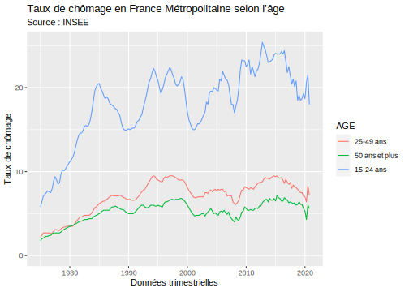
Sur ce graphique, on observe en premier lieu que le taux de chômage chez les jeunes est bien supérieur à celui des 25-49 ans ou celui des 50 ans et plus. De plus, c’est également celui qui connaît les plus fortes variations négatives comme positives depuis 1975.
Le taux de chômage chez les 25-49 ans et chez les plus de 50 ans est similaire. Cependant, celui des 50 ans et plus reste le plus bas sur toute la période.
4.1.4 Conclusion
L’avantage d’utiliser une API est la mise à jour automatiquement des données.
Sur l’exemple ci-dessous, nous avons le taux de chômage jusqu’au quatrième trimestre 2020. Si dans un an j’exécute de nouveau ce programme, tout se mettra automatiquement à jour, c’est-à-dire que les trimestres de 2021 seront ajoutés au tableau mais aussi au graphique.
Le second avantage de l’utilisation d’une API est la réduction des commandes à passer pour obtenir une information précise. Ici par exemple, sans avoir eu besoin d’ouvrir un navigateur Internet, nous avons obtenu les données INSEE du taux de chômage depuis 1975 en France Métropolitaine.
4.2 Mohadji M.
# A tibble: 197 x 5
id Name.fr Name.en url n_series
<chr> <chr> <chr> <chr> <dbl>
1 BALANCE-… Balance des paiements Balance of payments https://www.i… 197
2 CHOMAGE-… Chômage, taux de chô… Unemployment, unempl… https://www.i… 166
3 CLIMAT-A… Indicateurs synthéti… Business climate com… https://www.i… 3
4 CNA-2010… Consommation des mén… Households' consumpt… https://www.i… 2247
5 CNA-2010… Dépenses de consomma… Final consumption ex… https://www.i… 1391
6 CNA-2010… Comptes de productio… Production and opera… https://www.i… 2739
7 CNA-2010… Comptes des secteurs… Institutional sector… https://www.i… 1173
8 CNA-2010… Dépenses des adminis… General government e… https://www.i… 4400
9 CNA-2010… Dette et déficit des… Maastricht general g… https://www.i… 72
10 CNA-2010… Emploi intérieur, du… Domestic employment,… https://www.i… 702
# … with 187 more rows
|
| | 0%
|
|======================================================================| 100%# A tibble: 192 x 16
DATE TIME_PERIOD OBS_VALUE OBS_STATUS OBS_QUAL OBS_TYPE IDBANK FREQ
<date> <chr> <dbl> <chr> <chr> <chr> <chr> <chr>
1 2020-12-01 2020-12 100. A DEF A 01054… M
2 2020-11-01 2020-11 96.5 A DEF A 01054… M
3 2020-10-01 2020-10 98.0 A DEF A 01054… M
4 2020-09-01 2020-09 100. A DEF A 01054… M
5 2020-08-01 2020-08 107. A DEF A 01054… M
6 2020-07-01 2020-07 90.5 A DEF A 01054… M
7 2020-06-01 2020-06 94.8 A DEF A 01054… M
8 2020-05-01 2020-05 77.6 A DEF A 01054… M
9 2020-04-01 2020-04 54.2 A DEF A 01054… M
10 2020-03-01 2020-03 81.4 A DEF A 01054… M
# … with 182 more rows, and 8 more variables: TITLE_FR <chr>, TITLE_EN <chr>,
# LAST_UPDATE <chr>, UNIT_MEASURE <chr>, UNIT_MULT <chr>, REF_AREA <chr>,
# DECIMALS <chr>, OBS_REV <chr>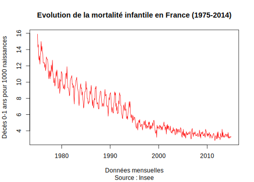
4.3 Olha H.
Je fais mon alternance dans un cabinet de conseil spécialisé dans le secteur de la santé “Averroès”. Mon entreprise d’accueil conseille et oriente les établissements du secteur en matière de la stratégie, du management, de la gestion, des questions immobilières etc.
L’intitulé de mon poste est “Chargée d’études en conseil santé”. Je viens en appui de missions du cabinet, à savoir, je recueille et traite des données nécessaires à l’élaboration de diagnostic stratégique et prépare, avec les consultants séniors, des supports et des livrables. Enfin, je participe à la rédaction de propositions commerciales.
Actuellement, je travaille sur un Business Plan pour un groupe de cliniques privées (3ème plus grand operateur privé en France). À savoir, j’élabore une retrospective (de l’activitié, de la situation financière etc.) qui viendra nourrir les prévisions 2022-2025.
4.3.1 Choix de l’API retenue
J’ai essayé de nombreuses API afin d’atterir sur celle de l’INSEE.
Remarque : le nom du tableau porte 6 lettres parce que c’est la 6ème tentative …
J’ai l’habitude d’utiliser les données INSEE dans le cadre de mon travail car c’est une ressource fiable qui propose de nombreuses études qui nous interessent en tant que cabinet : les données demographiques des années passées, mais aussi les prévisions pour le futur ; les données sur la densité des médecins ; sur les revenus et les dépenses des ménages etc.
Ces types de données nous sont très utiles en guise d’introduction lors de présentations pour le client qui, lui, souvent a une vision assez limitée en la matière.
Par exemple, nous travaillons régulièrement sur les projets médicaux des établissements, c’est-à-dire les plans que les differentes structures de santé établissent pour les 5 ans à venir (obligatoire pour les hôpitaux publics). Dans ce cas, bien connaître le territoire sur lequel opère l’établissement est crucial : la population, le taux de natalité, le poids de personnes 75+, le nombre de médecins sur le territoire etc.
Aujourd’hui je me suis interessée precisement au nombre de médecins, généralistes comme specialistes, en Île-de-France. J’ai besoin de connaître le chiffre absolu, pour le rapporter ensuite à la population de l’Île de France, mais aussi son évolution ces dernières années, pour, le cas écheant, degager et essayer d’expliquer la tendance et faire des prévision pour le futur.
4.3.2 Création d’un tableau
# A tibble: 197 x 5
id Name.fr Name.en url n_series
<chr> <chr> <chr> <chr> <dbl>
1 BALANCE-… Balance des paiements Balance of payments https://www.i… 197
2 CHOMAGE-… Chômage, taux de chô… Unemployment, unempl… https://www.i… 166
3 CLIMAT-A… Indicateurs synthéti… Business climate com… https://www.i… 3
4 CNA-2010… Consommation des mén… Households' consumpt… https://www.i… 2247
5 CNA-2010… Dépenses de consomma… Final consumption ex… https://www.i… 1391
6 CNA-2010… Comptes de productio… Production and opera… https://www.i… 2739
7 CNA-2010… Comptes des secteurs… Institutional sector… https://www.i… 1173
8 CNA-2010… Dépenses des adminis… General government e… https://www.i… 4400
9 CNA-2010… Dette et déficit des… Maastricht general g… https://www.i… 72
10 CNA-2010… Emploi intérieur, du… Domestic employment,… https://www.i… 702
# … with 187 more rows
|
| | 0%
|
|======================================================================| 100%# A tibble: 12 x 8
DATE TIME_PERIOD OBS_VALUE IDBANK TITLE_FR LAST_UPDATE UNIT_MEASURE
<date> <chr> <dbl> <chr> <chr> <chr> <chr>
1 2018-01-01 2018 48236 00172… Nombre … 2020-04-03 INDIVIDUS
2 2017-01-01 2017 48302 00172… Nombre … 2020-04-03 INDIVIDUS
3 2016-01-01 2016 48089 00172… Nombre … 2020-04-03 INDIVIDUS
4 2015-01-01 2015 47929 00172… Nombre … 2020-04-03 INDIVIDUS
5 2014-01-01 2014 47713 00172… Nombre … 2020-04-03 INDIVIDUS
6 2013-01-01 2013 47491 00172… Nombre … 2020-04-03 INDIVIDUS
7 2012-01-01 2012 47245 00172… Nombre … 2020-04-03 INDIVIDUS
8 2011-01-01 2011 NaN 00172… Nombre … 2020-04-03 INDIVIDUS
9 2010-01-01 2010 47683 00172… Nombre … 2020-04-03 INDIVIDUS
10 2009-01-01 2009 47054 00172… Nombre … 2020-04-03 INDIVIDUS
11 2008-01-01 2008 47289 00172… Nombre … 2020-04-03 INDIVIDUS
12 2007-01-01 2007 47855 00172… Nombre … 2020-04-03 INDIVIDUS
# … with 1 more variable: REF_AREA <chr>4.3.3 Création d’une figure
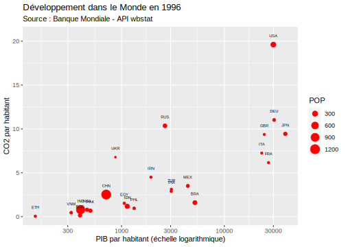
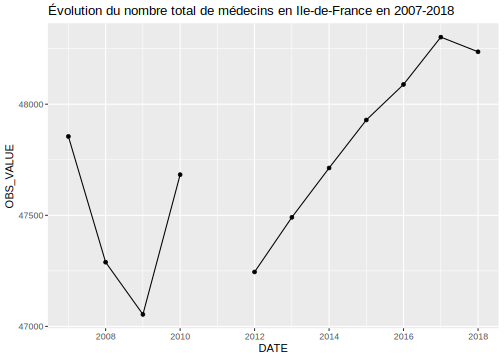
4.3.4 Conclusion
Dans le cas de ma démarche, la figure n’aide pas vraiment à la compréhension, le tableau est plus lisible. Je continuerai d’experimenter avec les differentes fonctions de packages pour aboutir à une présentation plus adaptée.
Néanmoins, je peux déjà tirer quelques conclusions sur l’utilité des API. Elles facilitent le travail avec de grandes bases données, ce qui est très important dans mon métier. API Insee s’averera, sans doute, encore plus utile dans le cas de visualisation de séries chronologiques qui portent sur plusieurs disaines d’années.
P.S. je suis très ravie d’avoir réussi!!!
4.4 Myriam J.
Je suis chargée de déploiement opérationnel au sein de l’entreprise Orange Events. C’est une branche de l’entité Orange qui propose des services technologiques à des prestataires d’évènements. Cela peut être une couverture Wi-fi, une retranscription Tv ou Internet en direct, le prêt de téléphone satellite, etc… Les équipes d’Orange Event travaillent avec un CRM (progiciel de gestion commun. Ce CRM a été mis en place il y a à peu prêt un an et il est sujet à des améliorations. Les utilisateurs nous sollicitent donc (mon tuteur, le chef de projet MOA, ou moi) pour nous demander une modification qui pourrait améliorer la fluidité, la cohérence, la rapidité de leur travail. C’est ensuite à nous de discerner si la demande est pertinente; c’est à dire est ce qu’il ne s’agit pas plutôt d’un problème de gestion, est ce que la demande ne rentre pas en contradiction avec le travail d’une autre personne, d’un autre service. Si la demande est jugée pertinente, elle est placée dans ce qu’on appelle un backlog ou un carnet de produit. Dans ce document se trouve toutes les Maintenances Story (demandes d’amélioration des utilisateurs). Le chef de projet et moi devont alors trier par priorité ces MS et les classer en Itérations (Liste des MS qui seront misent en productions à une date précise). Nous organisons ensuite des réunions avec le chef de projet MOE (les développeurs), nous discutons du chiffrage (coùt de chaque MS), puis, nous parlons d’éventuels bug remontés sur les anciennes MS déjà passées en productions. Je suis ensuite chargée de produire des Modes Opératoires pour informer les utilisateurs des nouvelles fonctionnalités du CRM et de la bonne utilisation de celles-ci.
4.4.1 Choix de l’API retenue
L’API retenue est Rest Countries. Elle contient des données sur les pays du monde (leur langue, leur région, leur coefficient de Gini, leur surface, leur population)
Chargement des librairies
Chargement de l’API grâce à la commande GET
Response [https://restcountries.eu/rest/v2]
Date: 2021-03-20 13:12
Status: 200
Content-Type: application/json;charset=utf-8
Size: 264 kBConversion du contenu de toto en mode character
Conversion en données utilisables pour R grâce à la fonction JSON
Sélection des colonnes qui nous intérèssent.
Nous avons la population et la surface de chaque pays. Créeons la variable Densité grâce à la formule suivante.
Min. 1st Qu. Median Mean 3rd Qu. Max. NA's
0.00 30.35 81.84 414.34 202.26 21636.67 10 Nous avons la répartition en quartile de la densité de la population pour tous les pays. Nous voulons regrouper ces valeurs en catégories. Nous créeons donc la variable qualitative DensPop2 qui indiquera le niveau de densité du pays.
4.4.2 Création d’un tableau
Nous souhaitons obsever pour chaque pays d’Afrique (uniquement), quel est le niveau de densité par pays. Puis on enregistre le tableau.
# A tibble: 60 x 2
name DensPop2
<chr> <fct>
1 Algeria Très faible densité
2 Angola Très faible densité
3 Benin Forte densité
4 Botswana Très faible densité
5 British Indian Ocean Territory Faible densité
6 Burkina Faso Faible densité
7 Burundi Forte densité
8 Cameroon Faible densité
9 Cabo Verde Forte densité
10 Central African Republic Très faible densité
# … with 50 more rows4.4.3 Création d’une figure
Nous avons choisi de faire une boxplot du niveau d’inégalité par région. Nous observons que la région où l’inégalité est la plus grand est en Amérique. On ne parle pas ici de la région la plus pauvre, mais bien de la région qui contient les plus grandes inégalités. Nous notons que de nombreuses données sont manquantes pour le coefficient de Gini.
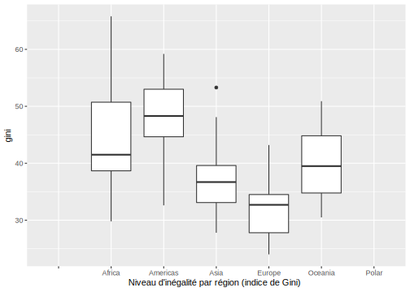
4.4.4 Conclusion
Nous avons choisi cette API parce qu’elle était accéssibles mais de nombreuses autres ont retenus notre attention. L’une nous donnait des informations sur les mouvements et les phases de la lune et du soleil. une autre nous donnait toutes les informations connues et recensées sur les plantes. Malheureusement, nous avons pas réussis à extraire correctement ces données. Par ailleurs, les données de démographies et de richesses m’intérèssent également car j’aimerais m’orienter vers le développement des territoires (par exemple, au sein d’une entité telle que l’AFD)
4.5 Aswija R.
J’effectue mon apprentissage dans le département des Financements Structurés (SFI) de l’entreprise Crédit Agricole Corporate and Investment Bank (CACIB), la filière banque de financement et d’investissement du groupe Crédit agricole. Le SFI sert à originer, structurer et financer, en France et à l’étranger, des opérations d’investissement, reposant sur des sûretés réelles (avions, bateaux, immobilier d’entreprise), ou des crédits complexes. Le programme sur lequel je travaille, Loanscape vise à déployer une application de gestion des contrats, appuyée par un système d’information prenant en compte les attentes des clients.
Afin de mettre en oeuvre cet outil, il faut centraliser et “dictionnariser” les données qui serviront à l’application. Je travaille donc à l’élaboration du dictionnaire de données de Loanscape en collectant les données des anciennes applications et en consultant les analystes et utilisateurs de ces dernières. Ma tâche principale est d’effectuer un mapping des données du nouveau dictionnaire avec les dictionnaires des anciennes applications.
4.5.1 Choix de l’API retenue
Mon apprentissage m’amenant à traiter les besoins en gestion de contrat de CACIB aussi bien en Europe qu’aux États-Unis ou encore en Asie. La base de données de la Banque mondiale m’a paru être donc la plus appropriée. En effet La Banque mondiale est une institution financière internationale qui accorde des prêts à effet de levier à des pays en développement pour des projets d’investissement. Dans ce cas des indicateurs de développement pourraient être utilisés afin d’effectuer des observations du développement dans le monde. L’API choisie est World Development Indicators, (WDI) : https://datatopics.worldbank.org/world-development-indicators/
WDI correspond également à un package dans R. Ce pacakge permet la recherche et le téléchargement des données à partir de plus de 40 bases de données hébergées par la Banque mondiale. Les base de données regroupent des indicateurs du développement mondial, afin d’effectuer des analyses et des compilations statistiques pertinentes, au niveau international. Dans le cadre de la lutte de la Banque mondiale contre la pauvreté, la base de données a été amenée à regrouper 1 400 indicateurs, vieux de plus de 50 ans pour certains. On y retrouve des données sur les statistiques de la dette internationale, l’indice du capital humain ou encore des indicateurs de pauvreté intranationale.
4.5.1.1 a) Installation de WDI
WDI est publié sur CRAN (site web où l’on peut trouver et télécharger du matériel concernant le logiciel de statistiques R) et peut donc être installé en tapant simplement ceci dans la console R : install.packages(‘WDI’)
Afin d’exploiter les données de WDI, il est nécessaire de charger les packages suivants pour l’analyse des données.
4.5.2 Création d’un tableau
4.5.2.1 a) Chargement des données
On commence par charger les données de WDI dans un “catalogue”.
Après avoir chargé les données, on constate que ces dernères sont regroupées en 2 listes, une pour les indicateurs (series) et une autre pour les locatisation géographiques (country).
4.5.2.2 b) Choix des données et Conception du tableau
[1] 304 9| iso3c | iso2c | country | region | capital | longitude | latitude | income | lending |
|---|---|---|---|---|---|---|---|---|
| ABW | AW | Aruba | Latin America & Caribbean | Oranjestad | -70.0167 | 12.5167 | High income | Not classified |
| AFG | AF | Afghanistan | South Asia | Kabul | 69.1761 | 34.5228 | Low income | IDA |
| AFR | A9 | Africa | Aggregates | Aggregates | Aggregates | |||
| AGO | AO | Angola | Sub-Saharan Africa | Luanda | 13.242 | -8.81155 | Lower middle income | IBRD |
| ALB | AL | Albania | Europe & Central Asia | Tirane | 19.8172 | 41.3317 | Upper middle income | IBRD |
| AND | AD | Andorra | Europe & Central Asia | Andorra la Vella | 1.5218 | 42.5075 | High income | Not classified |
Le tableau des pays comporte 304 observations de 9 types différent (pays, capitales, régions…).
[1] 17467 5| indicator | name | description | sourceDatabase | sourceOrganization |
|---|---|---|---|---|
| 1.0.HCount.1.90usd | Poverty Headcount ($1.90 a day) | The poverty headcount index measures the proportion of the population with daily per capita income (in 2011 PPP) below the poverty line. | LAC Equity Lab | LAC Equity Lab tabulations of SEDLAC (CEDLAS and the World Bank). |
| 1.0.HCount.2.5usd | Poverty Headcount ($2.50 a day) | The poverty headcount index measures the proportion of the population with daily per capita income (in 2005 PPP) below the poverty line. | LAC Equity Lab | LAC Equity Lab tabulations of SEDLAC (CEDLAS and the World Bank). |
| 1.0.HCount.Mid10to50 | Middle Class ($10-50 a day) Headcount | The poverty headcount index measures the proportion of the population with daily per capita income (in 2005 PPP) below the poverty line. | LAC Equity Lab | LAC Equity Lab tabulations of SEDLAC (CEDLAS and the World Bank). |
| 1.0.HCount.Ofcl | Official Moderate Poverty Rate-National | The poverty headcount index measures the proportion of the population with daily per capita income below the official poverty line developed by each country. | LAC Equity Lab | LAC Equity Lab tabulations of data from National Statistical Offices. |
| 1.0.HCount.Poor4uds | Poverty Headcount ($4 a day) | The poverty headcount index measures the proportion of the population with daily per capita income (in 2005 PPP) below the poverty line. | LAC Equity Lab | LAC Equity Lab tabulations of SEDLAC (CEDLAS and the World Bank). |
| 1.0.HCount.Vul4to10 | Vulnerable ($4-10 a day) Headcount | The poverty headcount index measures the proportion of the population with daily per capita income (in 2005 PPP) below the poverty line. | LAC Equity Lab | LAC Equity Lab tabulations of SEDLAC (CEDLAS and the World Bank). |
Le tableau des indicateurs comporte 17467 observations.
L’un des rôles de la banque mondial est de pallier l’absence ou la faible capacité d’aide financière de certains gouvernements, afin de permettre le développement d’un pays. Mon alternance concernant les moyens de financement et d’investissement de projets et d’actifs partout dans le monde. Je peux effectuer une analyse sur ce sujet. Il me faut dans un premier trouver les indicateurs sur ce sujet, en utilisant le mot “banks”, dans ma recherche d’indicateurs.
indicator
[1,] "DT.AMT.PCBK.CD"
[2,] "DT.AMT.PCBK.GG.CD"
[3,] "DT.AMT.PCBK.OPS.CD"
[4,] "DT.AMT.PCBK.PRVG.CD"
[5,] "DT.AMT.PCBK.PS.CD"
[6,] "DT.AMT.PNGC.CD"
name
[1,] "PPG, commercial banks (AMT, current US$)"
[2,] "GG, commercial banks (AMT, current US$)"
[3,] "OPS, commercial banks (AMT, current US$)"
[4,] "PRVG, commercial banks (AMT, current US$)"
[5,] "PS, commercial banks (AMT, current US$)"
[6,] "PNG, commercial banks and other creditors (AMT, current US$)"Après avoir consulté les indicateurs, l’indicateur exprimé en pourcentage :
- Foreign banks among total banks (%), qui représente le pourcentage de banques étrangères parmi les banques présentes dans un pays pourra être utilisé / GFDD.OI.15
On crée un tableau avec l’indicateur choisi pour l’année 2013 (dernière année avec le plus de données pour la majorité des pays). Dans la mesure où CACIB est principalement implanté en France, aux Etats-Unis, au Royaume-Uni, à Singapour et en Inde, on prendra les données de ces 5pays.
On peut télécharger le tableau
4.5.3 Création d’une figure
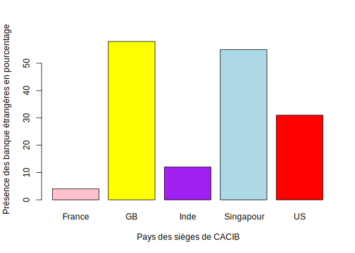
4.6 Youba B.
Rattaché au département Pilotage de la Performance, ma mission au sein de carrefour banque s’articule autours de l’accompagnement techniquement des équipes en place sur le projet de déploiement d’un outil de data visualisation (Power BI) au profit des directions des équipes commerciales du réseau d’agences ainsi que des équipes de relation clientèle du siège, et ce sur l’ensemble des phases suivante:
Etre l’interlocuteur privilégié de l’équipe dans les échanges relatifs à la conception du cahier des charges. Valider les besoins fonctionnels attendus par les équipes avant développement des vues;
Développer les vues nécessaires sous SAS, depuis le datawarehouse Oracle, afin d’alimenter les rapports disponibles, sur la base du cahier des charges rédigé par nos équipes fonctionnelles;
Accompagner les équipes dans l’usage des tables/vues sous l’outil en question, ainsi que dans la conception des rapports et tableaux de bord;
Valider l’automatisation des rapports end to end, avec l’approche des passerelles entre outils (CRM -> SAS -> PowerBI), et la gestion des accès aux rapports finaux, et aux différentes applications de l’environnement SAS.
4.6.1 Choix de l’API retenue
Durant cette analyse nous allons travailler avec l’API de l’insee. Le choix de cette API a été opéré sur la base de la connaissance et de la richesse de celle-ci. Elle est en effet d’un coté la seule API vue en cours avec celle de la NASA, et d’un autre coté elle me fournit de la donnée qui peut être reliée au domaine de mon entreprise d’accueil. Je vais pour cela exploiter la série “SERIE_LOYERS” pour étudier la variation des loyers au cours des années en France Métropolitaine.
4.6.2 Création d’un tableau
4.6.2.1 Chargement du catalogue
on crée un catalogue pour voir les tableaux disponibles :
4.6.2.2 Chargement des variables d’un tableau
On a donc besoin de la variable series_loyers pour l’exercice :
|
| | 0%
|
|======================================================================| 100%4.6.3 Création d’une figure
4.6.3.1 Graphique

4.6.4 Conclusion
L’analyse présentée au courant de ce projet va permettre, dans mon domaine professionnel, d’analyser le pouvoir d’achat de la population qui va servir les algorithmes du scoring de la banque.
Cet indice qui est relié systématiquement au taux d’inflation moyenne relevée sur une période donnée, permet d’évaluer partiellement le pouvoir d’achat des demandeurs de crédit et donc leur capacité à rembourser leur prêts, cela permet en effet, en plus d’autres variables, d’évaluer le risque de crédit liée à la solvabilité des personnes contactant des crédits au sein de la banque.
On peut remarquer facilement la volatilité de ce dermier au cours des années, ainsi qu’une nette baisse pendant toute la durée de l’étude (1983 à 2019).
4.7 Richard P.
J’effectue mon alternance au sein du Ministère des Armées dans le cadre d’une mission de gestion de projet à très fort enjeu. Il s’agit d’une apllication ouverte sur internet et intradef (intranet de la defense) destinée aux reservistes et à leurs gestionnaires. Intégrée au sein d’une équipe de personnels civils et miilitaires, notre travail est relativement varié. Notre mission première consiste à s’assurer du bon fonctionnement de l’applicatif sur les environnements mis à disposition par le ministère des armées car il y a une plateforme internet protégée, une passerelle, des système d’authentification sso etc …). Cependant, nous participons également activement aux recettes et aux ateliers d’expressions de besoins et de retour d’expérience utilisateur. Pour l’instant, j’ai personnellement travaillé aux activtés de recette, à de l’analyse de logs (notamment et surtout sur des logs hhtpr du back intradef de l’appli) et à la création de script vba et sql. Tout cela dans des objectif de suivi des quotas vis à vis des passerelles, de recherche de régressions applciatives et d’anonymisation de jeux de données à mettre à disposition de la MOE.
4.7.1 Choix de l’API retenue
J’ai choisi de m’orienter vers l’API de l’insee en raison de la diversité et de la richesse des données transmises. Plus particulèrement, je me suis dirigé vers l’évolution du nombre en décés en France (id=000436394). Notamment et surtout par curiosité, afin de comparer l’intensité de l’épisode covid avec d’autres épisodes précédents d’épidémies moins connues.
En effet, nous traversons une période de pandémie mondiale frôlant la science fiction tant l’ampleur de ce virus impacte notre quotidien. Cependant, ce n’est pas la première fois qu’une telle épidémie frappe le monde et il m’a semblé intéréssant de regarder dans le passé, en France, l’impact qu’ont pu avoir d’autres épidémies.
J’ai également choisi l’Insee car les quelques autres API que j’ai essayé de maîtriser ne disposait pas de séries temporelles. Par exemple, l’api airquality ne donne qu’une donnée en temps réel et il ne m’était pas possible d’opérer une comparaison dans le temps, mais uniquement dans l’espace. Je n’avais pas spécialement envie de travailler avec cette contrainte. Quant à d’autres que j’ai régardé, je n’ai tout simplement pas réussi à trouver une documentation claie à mes yeux.
4.7.2 Création d’un tableau
4.7.2.1 Chargement du package Insee puis de la librairie
4.7.2.2 Extraction de la série relative au nombre de deces mensuel en France (à l’aide de son id)
4.7.2.3 Création du tableau
| Année-Mois | Nombre de Décés |
|---|---|
| 1946-01 | 70900 |
| 1946-02 | 53958 |
| 1946-03 | 57287 |
| 1946-04 | 45376 |
| 1946-05 | 42591 |
4.7.3 Le graphique
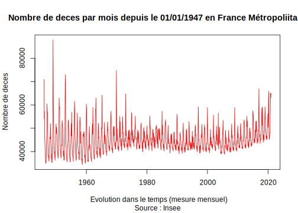
4.7.4 Brève analyse :
On constate qu’il y a 3 pics plus élevés (voir bien plus élevés) de nombres d’individus décédés que celui de la péridoe covid-19. Tout d’abord, sur la période 1948-1949 on frôle les 100 000 décés en un seul mois. C’est l’épisode dit de l’épidémie de grippe “italienne”. Ensuite, sur la période 1968-1970 (notamment décembre 1969), la France comme tant d’autres pays a du faire face à l’épidémie de grippe “de Hong Kong”. Enfin, on constate un nombre très élevé de décés en Janvier 2017, que l’on impute en partie à une épidémie de grippe hivernale amorcée fin 2016
4.7.5 Conclusion
En somme, les épisodes d’épidémies meurtrières ne sont pas si exceptionnels que l’on pourrait le penser. A travers l’histoire récente (70 dernières années), on remarque assez facilement l’impact qu’ont pu avoir certains virus en France. A défaut d’être mondialisé et très médiatisé, ces épisodes épidémiques n’ont pas été moins meurtriers que la covid-19. Il n’est cependant pas possible de dresser une quelqconque hierarchie d’intensité entre ces différents épisodes, notamment le covid face aux autres pour plusieurs raisons. Le nombre de décés est une donnée absolue, non relative, et de fait, il est important de considérer que la croissance démographique fausse significativement toute comparaison. Par ailleurs, depuis plus d’une décénnie, le nombre de décès a tendance à augmenter du fait de l’arrivée des générations nombreuses du baby-boom à des âges de forte mortalité. Et dans l"autre sens, jamais des mesures aussi restrictives n’avait été mis en place pour contrer l’expansion d’un virus.
4.8 Nicolas J.
J’effectue mon alternance pour le Ministère des Armées, au sein de l’Etat-Major de l’Armée de Terre, à Balard, dans le cadre de la création d’un nouveau système d’information, le “SI Activités”. Ce SI a pour but de faciliter la programmation d’activité militaires au sein de l’Armée de Terre, dans une logique de “on ne saisit la donnée qu’une fois”, afin d’éviter l’utilisation de tableau excels, très volatiles et dont la qualité de la donnée est variable.
Mes missions consistent à gérer le chantier de données pour ce nouveau SI. Cela inclue une assistance à la mise en place, et à l’évolution du modèle de données (MCD, MLD), la verification et la mise à jour de la documentation OPENApi 2 (Swagger) afin de s’assurer que l’outil respecte bien les contraintes imposées par le ministère. En outre, ce la permet au SI de mieux résister au temps, car cette documentation permet à chacun de comprendre comment il est construit, si besoin est de le modifier.
Je suis aussi amené à organiser les test utilisateurs pour les différentes phases de développement, m’assurer de la bonne intégration des données en base, l’anonymisation des jeux de données fournis à l’industriel etc…
4.8.1 Choix de l’API retenue
J’ai choisi de m’orienter vers l’API wbstat de la WorldBank.
J’étais au début parti sur l’API “crimedata”, qui est une API qui recense années par années les crimes dans différentes métropoles des Etats-Unis. J’ai réussi à extraire des données très intéressantes (données sur les crimes violents et leur évolution par années), mais les données n’étant pas toutes au format numérique, j’ai passé une grande quantité de temps à essayer d’en faire un plot, mais sans succès.
J’ai donc fait le choix de m’orienter sur une API produisant des statistiques numériques, et la worldbank s’est donc révélée être un choix évident, puisqu’elle regorge de données statistiques. L’avantage de cette API est multiple :
La disponibilité et la richesse des données
- La WorldBank est comparable dans sa mission à l’INSEE. Elle met à disposition une quantité énorme de données diverses, consultables par tous et pouvant être croisées entre elles. En ça, elle est un formidable outil pour comparer des indicateurs statistiques entre eux
L’existence d’un package dans R de la WorldBank : wbstats
- le package webstat de R permet d’avoir accès aux données de l’API de la WorldBank. Elle est très aboutie, et sa documentation est complète et fournie, ce qui permet de connaitre les commandes, leur syntaxe et leur utilité très facilement, ce qui est praticulièrement pratique pour comparer des indicateurs statistiques
La documentation est accessible ici : https://cran.r-project.org/web/packages/wbstats/index.html
Il n’a pas été évident de trouver des indicateurs intéressants à observer, au vu de l’immensité de la donnée proposée par WorldBank
Il me semble très intéressant d’observer les conséquences et effets des grands chocs systémiques sur les indicateurs économiques ou sociaux d’un pays. Par exemple : l’effet d’une crise économique sur un pays, comme en 2008, ou encore, la chute de l’URSS et ses conséquences pour les pays etc..
A cet effet, j’ai décidé de me pencher sur le développement économiques des pays de l’Ex-Yougoslavie, afin de voir les grandes tendances qui pourraient s’en dégager.
4.8.2 Création d’un tableau
Je récupère deux indicateurs : la population par pays, et le PIB par pays, afin d’obtenir le PIB par habitants. Je selectionne pour les 6 pays de l’Ex-Yugoslavie, à savoir : la Slovénie, la Bosnie-Herzégovine, la Croatie, la Serbie, la Macédoine du Nord et le Kosovo, tout en définissant un périmètre des 30 dernières années (ce qui correspond grossièrement à la chute de la Yougoslavie, à maintenant). Enfin, je trie par date, afin d’avoir une visualition sur plusieurs pays, plutôt que plusieurs années d’un même pays.
| Code | Pays | Année | PIBHAB |
|---|---|---|---|
| SVN | Slovenia | 1994 | 7564.7407 |
| XKX | Kosovo | 1994 | NA |
| BIH | Bosnia and Herzegovina | 1995 | 487.4768 |
| HRV | Croatia | 1995 | 4877.5275 |
| MKD | North Macedonia | 1995 | 2359.8003 |
| MNE | Montenegro | 1995 | NA |
| SRB | Serbia | 1995 | 2207.4506 |
| SVN | Slovenia | 1995 | 10730.4510 |
| XKX | Kosovo | 1995 | NA |
| BIH | Bosnia and Herzegovina | 1996 | 740.0985 |
| HRV | Croatia | 1996 | 5232.8144 |
| MKD | North Macedonia | 1996 | 2338.0683 |
| MNE | Montenegro | 1996 | NA |
| SRB | Serbia | 1996 | 2864.0847 |
| SVN | Slovenia | 1996 | 10815.1110 |
| XKX | Kosovo | 1996 | NA |
| BIH | Bosnia and Herzegovina | 1997 | 982.8018 |
| HRV | Croatia | 1997 | 5263.4321 |
| MKD | North Macedonia | 1997 | 1964.8829 |
| MNE | Montenegro | 1997 | NA |
| SRB | Serbia | 1997 | 3380.0414 |
| SVN | Slovenia | 1997 | 10454.9656 |
| XKX | Kosovo | 1997 | NA |
| BIH | Bosnia and Herzegovina | 1998 | 1102.3910 |
| HRV | Croatia | 1998 | 5640.3162 |
| MKD | North Macedonia | 1998 | 1866.8501 |
| MNE | Montenegro | 1998 | NA |
| SRB | Serbia | 1998 | 2571.1727 |
| SVN | Slovenia | 1998 | 11175.7710 |
| XKX | Kosovo | 1998 | NA |
| BIH | Bosnia and Herzegovina | 1999 | 1251.7473 |
| HRV | Croatia | 1999 | 5198.1240 |
| MKD | North Macedonia | 1999 | 1908.5926 |
| MNE | Montenegro | 1999 | NA |
| SRB | Serbia | 1999 | 2571.3040 |
| SVN | Slovenia | 1999 | 11452.7831 |
| XKX | Kosovo | 1999 | NA |
| BIH | Bosnia and Herzegovina | 2000 | 1467.7765 |
| HRV | Croatia | 2000 | 4841.5867 |
| MKD | North Macedonia | 2000 | 1854.1460 |
| MNE | Montenegro | 2000 | 1627.0726 |
| SRB | Serbia | 2000 | 914.7857 |
| SVN | Slovenia | 2000 | 10201.3035 |
| XKX | Kosovo | 2000 | 1087.7624 |
| BIH | Bosnia and Herzegovina | 2001 | 1530.8148 |
| HRV | Croatia | 2001 | 5362.0229 |
| MKD | North Macedonia | 2001 | 1815.9201 |
J’ai choisi de commencer la prévisualisation du tableau à partir de la 40ème ligne, car les 3 premières années comportent des valeurs manquantes.
4.8.3 Le graphique :
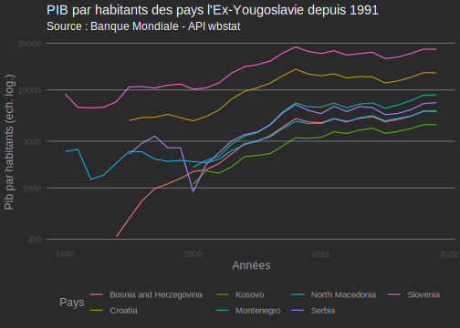
Tous les pays de l’Ex-Yougoslavie semblent dégager une tendance commune :
Première tendance +Juste après la disparition de la Yougoslavie, pèriode de légère baisse puis relative stagnation jusqu’aux années 2000 (à l’exception de la Slovénie qui connait une légère croissance en 1995 et 1996, avant de stagner)
Seconde tendance +A partir des années 2000, tous les pays connaissent une hausse du PIB moyen par habitants, et ce de manière continue jusqu’en 2008, au moment de la crise des sub primes.
Troisième tendance +vers 2012/2013, une fois la crise économique passée, les économies repartent à la hausse jusqu’en 2018, où la croissance du PIB par habitants se met à stagner, hormis pour la Serbie qui croît mais plus lentement.
4.8.4 Conclusion
Comme observé plus haut, on dénote facilement des tendances pour l’évolution du PIB par habitants pour ces 7 pays de l’Ex-Gougoslavie. A noter toutefois, la Slovénie a connu une croissance bien plus forte que les autres pays, étant plus proche du bloc européen. La croatie, aussi, mais dans une moindre mesure. On note l’entrée en 2004 de la Slovénie dans l’Union Européenne, et en 2013 de la Croatie.
La séparation de ces pays semble, quelques années après leur séparation, avoir eu un effet bénéfique sur le niveau économique de ses habitants, qui n’a cessé d’augmenter à partir des années 2000, jusqu’à la crise mondiale. On note cependant que les économies de ces pays ont été fortement résistance à la recession des années 2000, et ont d’ailleurs connu une très forte croissance à partir de ce moment.
Hors Slovénie et Croatie, les croissances de richesse sont, certes, présentes, mais peu élevées, en comparaison avec les deux pays précédemment cités
Il sera intéressant de re regarder ce graphique dans 10 ans, quand on aura pu observer l’effet de l’adhésion à l’Union Européenne de la Croatie, et peut être même d’autres pays (Comme la Serbie).
4.9 Ouali B.
Je suis actuellement dans une entreprise mutualiste appelée Garance. J’ai pour mission d’être une assistante à la maitrice d’ouvrage. J’aide à la mise en place des fonctionnalités des sites, aux tests et aux recettages des sites internet créés. Le but de mon alternance est de développer des compétences en gestion de projet comme avoir la capacité a écrire des cahiers de test et recette, des kick-off et des notes de cadrage. De plus, mon alternance me permet d’être force de proposition sur la création d’application et de développer une expertise sur ce dont à besoin l’entreprise pour améliorer son activité.
4.9.1 Choix de l’API retenue
J’ai décidé de choisir l’API Insee car je voulais avoir un peu plus d’information sur le secteur du conseil informatique. SOuhaitant me diriger dans ce secteur, je pense qu’il est préférable d’utiliser la pertinence de ce devoir pour voir l’evolution et répondre à quelques questions dont je m’interrogeais. “Est-ce que ce secteur est instable ? Est-ce les fluctuations sont fortes ? Est-ce qu’il est porteur ou risuqe t’il de s’essoufler au vu de la crise COVID-19 ?”
Comme l’insee est un institut offrant de nombreuses données exploitables, l’utilisaition de cette API est l’idéale. Je trouverais surement l’évolution de ce secteur, le chiffre d’affaire créée et les potentiels fluctuations qu’il a pu subir.
4.9.2 Création d’un tableau
| id | Name.fr | Name.en | url | n_series |
|---|---|---|---|---|
| BALANCE-PAIEMENTS | Balance des paiements | Balance of payments | https://www.insee.fr/fr/statistiques/series/103212755 | 197 |
| CHOMAGE-TRIM-NATIONAL | Chômage, taux de chômage par sexe et âge (sens BIT) | Unemployment, unemployment rate and halo by sex and age (ILO) | https://www.insee.fr/fr/statistiques/series/103167923 | 166 |
| CLIMAT-AFFAIRES | Indicateurs synthétiques du climat des affaires | Business climate composite indicators | https://www.insee.fr/fr/statistiques/series/103047029 | 3 |
| CNA-2010-CONSO-MEN | Consommation des ménages - Résultats par produit, fonction et durabilité | Households’ consumption - Results by product, function and durability | https://www.insee.fr/fr/statistiques/series/102331845 | 2247 |
| CNA-2010-CONSO-SI | Dépenses de consommation finale par secteur institutionnel - Résultats par opération et produit | Final consumption expenditure by institutional sectors - Results by transaction and product | https://www.insee.fr/fr/statistiques/series/102809534 | 1391 |
| CNA-2010-CPEB | Comptes de production et d’exploitation par branche | Production and operating accounts by branch | https://www.insee.fr/fr/statistiques/series/102852781 | 2739 |
|
| | 0%
|
|======================================================================| 100%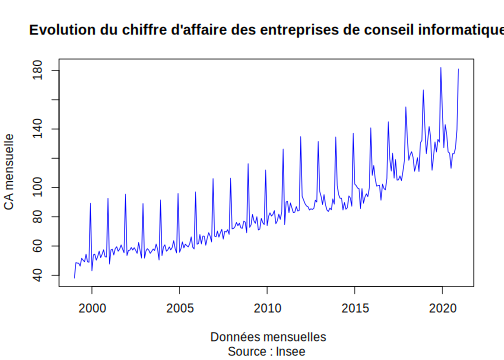
Ce document est un graphique courbe représentant le chiffre d’affaire des entreprises de conseil informatique de 1995 à 2020. Ce sont des données mensuelles brut en base 100 provenant de l’Insee.
De prime abord, nous pouvons voir que le chiffre d’affaire fluctue énormement chaque année. Ces fluctuations sont l’expression des “bonnes périodes” de ce secteur.
De plus, nous nous appercevons que le trend de ce graphique va à la hausse, c’est à dire, que plus les années passent et plus le chiffre d’affaire des entreprises augmente. L’accroissement du chiffre d’affaire des entreprises de conseil informatique s’explique par le fait que depuis la création d’internet, les entreprises se spécialisent dans ce domaine pour conseiller les entreprises qui developpent de nouvelles technologies pour améliorer leurs activités.
Pourtant nous voyons un effet important en 2020 puisqu’il subit la plus grosse baisse depuis 1999, atteignant 110 base 100, comparé aux baisses des mois précédents de 120 base 100. Cela s’explique par l’effet des confinements du au Covid qui a ralentis les activités des entreprises. Neanmoins, il reprend son élan à la moitié de l’année 2020 pour atteindre 170 base 100.
4.9.3 Création d’une figure
# A tibble: 1 x 39
nomflow idbank cleFlow FREQ EUROSTAT_ICA_SE… INDICATEUR NAF2 NATURE REF_AREA
<chr> <chr> <chr> <chr> <chr> <chr> <chr> <chr> <chr>
1 ICA-20… 01054… M.BDM.… M BDM ICASERV 62-02 INDIC… FE
# … with 30 more variables: UNIT_MEASURE <chr>, CORRECTION <chr>, BASIND <chr>,
# FREQ_label_fr <chr>, FREQ_label_en <chr>,
# EUROSTAT_ICA_SERVICES_label_fr <chr>, EUROSTAT_ICA_SERVICES_label_en <chr>,
# INDICATEUR_label_fr <chr>, INDICATEUR_label_en <chr>, NAF2_label_fr <chr>,
# NAF2_label_en <chr>, NATURE_label_fr <chr>, NATURE_label_en <chr>,
# REF_AREA_label_fr <chr>, REF_AREA_label_en <chr>,
# UNIT_MEASURE_label_fr <chr>, UNIT_MEASURE_label_en <chr>,
# CORRECTION_label_fr <chr>, CORRECTION_label_en <chr>,
# BASIND_label_fr <chr>, BASIND_label_en <chr>, dim1 <chr>, dim2 <chr>,
# dim3 <chr>, dim4 <chr>, dim5 <chr>, dim6 <chr>, dim7 <chr>, dim8 <chr>,
# dim9 <chr>
|
| | 0%
|
|======================================================================| 100%| DATE | TIME_PERIOD | OBS_VALUE |
|---|---|---|
| 1999-01-01 | 1999-01 | 38.07 |
| 1999-02-01 | 1999-02 | 48.69 |
| 1999-03-01 | 1999-03 | 48.35 |
| 1999-04-01 | 1999-04 | 48.28 |
| 1999-05-01 | 1999-05 | 46.30 |
| 1999-06-01 | 1999-06 | 51.67 |
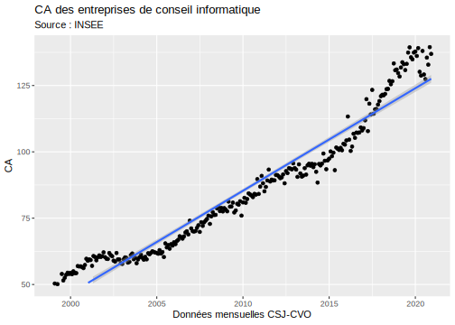
Ce document est un graphique courbe représentant le chiffre d’affaire des entreprises de conseil informatique de 1999 à 2020. Ce sont des données mensuelles comprenant la correction CSJ-CVO provenant de l’Insee.
Nous voyons que le trend de ce graphique est une preuve des commentaires fait plus haut dans le graphique du chiffre d’affaire des entreprises dans le conseil informatique. Nous nous appercevons qu’avec la correction, la visibilité de la tendance est claire. Les entreprises voyent leurs chiffres d’affaires s’accélérer proportionnellement au temps, c’est à dire, que plus le temps passe, est plus d’entreprises font appellent aux conseils pour amener au mieux leur projet. Pourtant les effets de fluctuation sont moins importants. En corrigeant les effets de saisonnalité, le secteur est stable et subit moins de baisse que l’on peut supposer.
4.9.4 Conclusion
Pour conclure, nous nous appercevons que de prime abord, le secteur du conseil informatique est un secteur très fluctuant. Mais lorsque nous utilisons des données corrigées, ce secteur ne fluctue pas autant que ce que nous pourrions voir dans le premier graphique. Nous pouvons dire que la santé de ce secteur est bonne. Il ne subit pas les effets des grandes crises telles que la crise des subprimes et suit le trend des secteurs informatiques. Bien que la crise du COVID 19 a été virulente pour un ensemble de secteur, la baisse du chiffre d’affaire avant 2020 est rattrapée quelque mois plutard pour atteindre le plus haut chiffre d’affaire obtenu depuis 1999. Au vue des resultats, nous pouvons dire que le secteur du conseil informatique pourrait voir son chiffre d’affaire augmenter et que la crise du covid ne lui sera pas fatal comparé à d’autres secteurs de service.
4.10 Robinson G.
Cette année 2020-2021 j’effectue mon alternance dans une régie publicitaire nommée “366 communities”. Leur travail est de gérer l’espace publicitaire de toute la presse quotidienne française nationale (que ce soit au format papier ou digital). Ma mission à leur côtés est de finaliser la mise en production d’un logiciel de gestion relation client. Je suis amené à faire du travail de consolidation de données, de mapping entre différentes base de données.Je suis assistant à maîtrise d’ouvrage, mon rôle est donc de comprendre les besoins des commerciaux et ce qu’ils attendent du nouveau CRM. Je suis amené à manipuler des statistiques sur les commmerciaux, leurs rendez-vous avec des clients et leurs opportunités business. Notre CRM est fourni par un prestataire externe et leur documentation est mal renseigné. Nos données sont éparpillés, les API’s qu’il propose sont très mal adaptés à nos besoins. Actuellement je suis donc chargé de maintenir à jour le fichier backlog(fichier des différentes fonctionnalités attendues du CRM), c’est à dire repérer des nouvelles anomalies et supprimer celles qui ont été corrigé.
4.10.1 Choix de l’API (Insee)
Travaillant uniquement sur des données nationales l’API de l’insee me semble tout à fait pertinente. Elle permet d’avoir accés à différents jeu de données sur l’évolution de l’économie et de la démographie en France. Les données remontent principalement jusqu’en 1975. L’accès à un jeu de données se fait en plusieurs étapes :
on installe le package insee(on le charge)
on stock la liste de datasets dans une variable, on peut ensuite voir l’ensemble des datasets présent de la bank des datasets
ensuite on choisi un dataset et on sélectionne son ID
grâce à la commande get_insee_idbank on stock le dataset sélectionné dans une autre variable
On peut ensuite réaliser des graphiques et des tableaux avec les données du dataset.
4.10.1.1 appel de l’api avec des package R spécial
installer le package insee et le charger.
A défaut de trouver des jeu de données directement en lien avec mon secteur d’activités j’ai décider de travailler sur les données de chômages en France depuis 1975 jusqu’a la mi-année 2019
J’ai choisi une ligne correspondant au taux de chômage des Hommes entre 25 et 49ans
|
| | 0%
|
|======================================================================| 100%4.10.2 Création graphique à partir de l’api
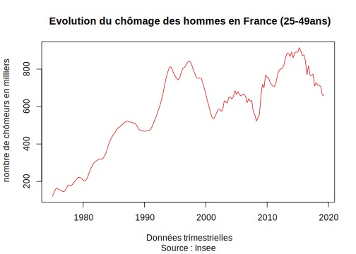
Début 1975 il y avait 121 000 hommes entre 25 et 49 ans au chômage contre 660 000 fin 2019. le nombre d’hommes au chômage a donc été multiplié par 5,5 sur la période . Cette évolution se justifie par une multiplication par 4 du taux de chômage et par une légère hausse de la population. Le pic du chômage pour les hommes à été atteint au 2ème trimestre 2015 avec 915 000 chômeurs.
Ici j’extrait les mêmes données sur le chômage mais pour les Femmes.
|
| | 0%
|
|======================================================================| 100%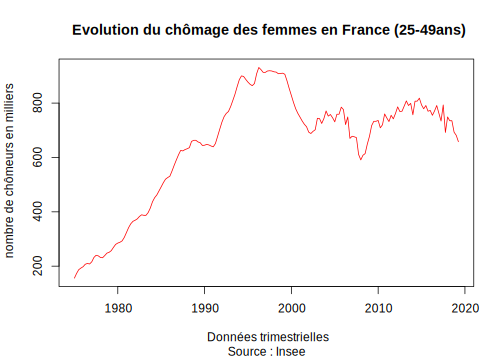
Début 1975 il y avait 156 000 femmes entre 25 et 49 ans au chômage contre 660 000 fin 2019. le nombre de femmes au chômage a donc été multiplié par 5 sur la période . Le pic du chômage pour les femmes à été atteint au 3ème trimestre 1997 avec 919 000 chômeuses
4.10.3 Création tableau à partir de l’api
Partie à revoir
4.10.4 Conclusion
Le taux de chômage des Hommes et des Femmes a globalement connu la même évolution entre 1975 et 2019. Néanmoins on remarque une différence au niveau de la date des pics de chômages atteints.